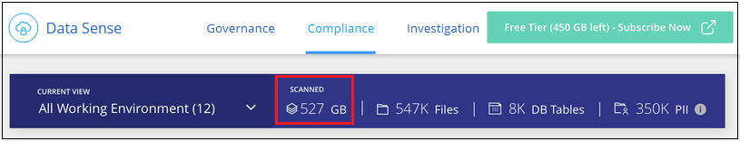

Dokumentationsänderungen beantragen
Dokumentationsänderungen beantragen In GitHub bearbeiten
In GitHub bearbeiten Leitfaden für Beitragende
Leitfaden für BeitragendeLizenzierung für Cloud Data Sense einrichten
Beitragende
Die ersten 1 TB an Daten, die Cloud Data Sense in einem BlueXP-Arbeitsbereich scannt, sind kostenlos. Für den weiteren Scan der Daten ist eine BYOL-Lizenz von NetApp oder ein Abonnement vom Marketplace Ihres Cloud-Providers erforderlich.
Ein paar Notizen, bevor Sie weitere lesen:
-
Wenn Sie das BlueXP Pay-as-you-go-Abonnement (PAYGO) bereits auf dem Markt Ihres Cloud-Providers abonniert haben, haben Sie sich auch automatisch für Cloud Data Sense angemeldet. Sie müssen sich nicht erneut anmelden.
-
Die Cloud Data Sense Bring-Your-Own-License (BYOL) ist eine „Floating“-Lizenz, die Sie für alle Arbeitsumgebungen und Datenquellen im zu scannenden Arbeitsbereich verwenden können. Im Digital Wallet wird ein aktives Abonnement angezeigt.
Nutzen Sie ein Cloud Data Sense PAYGO-Abonnement
Mit Pay-as-you-go-Abonnements auf dem Markt Ihres Cloud-Providers können Sie die Nutzung von Cloud Volumes ONTAP Systemen und vielen Cloud-Datenservices wie Cloud Data Sense lizenzieren.
Sie können sich jederzeit für eine Anmeldung anmelden. Die Abrechnung erfolgt erst, wenn die Datenmenge mehr als 1 TB beträgt. Sie können immer die Gesamtmenge der Daten anzeigen, die über das Data Sense Dashboard gescannt werden. Und die Schaltfläche Jetzt abonnieren erleichtert die Anmeldung, wenn Sie bereit sind.

Diese Schritte müssen von einem Benutzer ausgeführt werden, der über die Rolle Account Admin verfügt.
-
Klicken Sie oben rechts in der BlueXP-Konsole auf das Symbol Einstellungen und wählen Sie Anmeldeinformationen.

-
Anmeldedaten für AWS Instance Profile, Azure Managed Service Identity oder Google Project finden Sie hier.
Das Abonnement muss dem Instanzprofil, der Managed Service Identity oder dem Google Project hinzugefügt werden. Das Laden funktioniert nicht anders.
Wenn Sie bereits über ein BlueXP-Abonnement (siehe unten für AWS) verfügen, sind Sie alle eingerichtet. Es gibt nichts anderes, das Sie tun müssen.

-
Wenn Sie noch kein Abonnement haben, bewegen Sie den Mauszeiger über die Anmeldeinformationen, klicken Sie auf das Aktionsmenü und klicken Sie auf Abonnement verknüpfen.

-
Wählen Sie ein vorhandenes Abonnement aus und klicken Sie auf Associate, oder klicken Sie auf Abonnement hinzufügen und befolgen Sie die Schritte.
Das folgende Video zeigt, wie ein zugeordnet werden soll "AWS Marketplace" Abonnement eines AWS Abonnements:
Das folgende Video zeigt, wie ein zugeordnet werden soll "Azure Marketplace" Abonnement eines Azure Abonnements:
Das folgende Video zeigt, wie ein zugeordnet werden soll "GCP Marketplace" Abonnement eines GCP-Abonnements:
Verwenden einer Cloud Data Sense BYOL-Lizenz
Mit den Bring-Your-Own-License-Lizenzen von NetApp erhalten Sie Vertragsbedingungen mit 1, 2 oder 3 Jahren. Die BYOL Cloud Data Sense-Lizenz ist eine Floating-Lizenz, bei der die Gesamtkapazität unter all Ihrer Arbeitsumgebungen und Datenquellen aufgeteilt wird, was die Erstlizenzierung und Erneuerung vereinfacht.
Wenn Sie keine Cloud Data Sense Lizenz haben, nehmen Sie mit uns Kontakt auf, um eine Lizenz zu erwerben:
-
Mailto:ng-contact-data-sense@netapp.com?Subject=Lizenzierung[E-Mail senden, um eine Lizenz zu erwerben].
-
Klicken Sie rechts unten auf das Chat-Symbol von BlueXP, um eine Lizenz anzufordern.
Wenn Sie optional eine nicht zugewiesene Node-basierte Lizenz für Cloud Volumes ONTAP haben, die Sie nicht verwenden werden, können Sie diese in eine Cloud Data Sense Lizenz mit derselben Dollaräquivalenz und demselben Ablaufdatum konvertieren. "Weitere Informationen finden Sie hier".
Sie verwenden die Seite „Digital Wallet“ in BlueXP, um Cloud Data Sense-Lizenzen zu verwalten. Sie können neue Lizenzen hinzufügen und vorhandene Lizenzen aktualisieren.
Holen Sie sich Ihre Cloud Data Sense Lizenzdatei
Nachdem Sie Ihre Cloud Data Sense Lizenz erworben haben, aktivieren Sie die Lizenz in BlueXP, indem Sie die Seriennummer und das NSS-Konto von Cloud Data Sense eingeben oder die Lizenzdatei NLF hochladen. Die folgenden Schritte zeigen, wie Sie die Lizenzdatei NLF abrufen können, wenn Sie diese Methode verwenden möchten.
Wenn Sie Cloud Data Sense auf einem Host in einer On-Premises-Website, die keinen Internetzugang hat, bereitgestellt haben, müssen Sie die Lizenzdatei von einem Internet-verbundenen System erhalten. Die Aktivierung der Lizenz unter Verwendung der Seriennummer und des NSS-Kontos ist für Installationen am dunklen Standort nicht verfügbar.
-
Melden Sie sich beim an "NetApp Support Website" Klicken Sie anschließend auf Systeme > Softwarelizenzen.
-
Geben Sie die Seriennummer Ihrer Cloud Data Sense Lizenz ein.

-
Klicken Sie unter Lizenzschlüssel auf NetApp Lizenzdatei erhalten.
-
Geben Sie Ihre BlueXP-Konto-ID ein (dies wird als Mandanten-ID auf der Support-Website bezeichnet) und klicken Sie auf Absenden, um die Lizenzdatei herunterzuladen.

Sie können Ihre BlueXP-Konto-ID finden, indem Sie oben in BlueXP das Dropdown-Menü Konto auswählen und dann neben Ihrem Konto auf Konto verwalten klicken. Ihre Account-ID wird auf der Registerkarte „Übersicht“ angezeigt.
Fügen Sie Ihrem Konto Cloud Data Sense BYOL-Lizenzen hinzu
Nachdem Sie eine Cloud Data Sense Lizenz für Ihr BlueXP-Konto erworben haben, müssen Sie BlueXP die Lizenz hinzufügen, um den Data Sense Service nutzen zu können.
-
Klicken Sie im BlueXP-Menü auf Governance > Digital Wallet und wählen Sie dann die Registerkarte Data Services Licenses aus.
-
Klicken Sie Auf Lizenz Hinzufügen.
-
Geben Sie im Dialogfeld „Lizenz hinzufügen“ die Lizenzinformationen ein, und klicken Sie auf Lizenz hinzufügen:
-
Wenn Sie über die Seriennummer der Data Sense-Lizenz verfügen und Ihr NSS-Konto kennen, wählen Sie die Option Seriennummer eingeben aus, und geben Sie diese Informationen ein.
Wenn Ihr NetApp Support Site Konto nicht in der Dropdown-Liste verfügbar ist, "Fügen Sie das NSS-Konto zu BlueXP hinzu".
-
Wenn Sie über die Lizenzdatei für den Datensense verfügen (erforderlich, wenn sie auf einer dunklen Seite installiert wird), wählen Sie die Option Lizenzdatei hochladen aus, und befolgen Sie die Anweisungen, um die Datei anzuhängen.

-
BlueXP fügt die Lizenz hinzu, damit Ihr Cloud Data Sense Service aktiv ist.
Aktualisieren einer Cloud Data Sense BYOL-Lizenz
Wenn sich Ihre Lizenzlaufzeit dem Ablaufdatum nähert oder Ihre lizenzierte Kapazität die Obergrenze erreicht, werden Sie in Cloud Data Sense benachrichtigt.

Dieser Status wird auch im Digital Wallet angezeigt.

Sie können Ihre Cloud Data Sense Lizenz aktualisieren, bevor sie abläuft, damit Sie nicht auf Ihre gescannten Daten zugreifen können.
-
Klicken Sie auf das Chat-Symbol rechts unten bei BlueXP, um eine Erweiterung Ihres Termins oder zusätzliche Kapazität für Ihre Cloud Data Sense Lizenz für die jeweilige Seriennummer anzufordern. Sie können auch Senden Sie eine E-Mail.
Nach der Zahlung für die Lizenz und der Registrierung auf der NetApp Support-Website aktualisiert BlueXP automatisch die Lizenz im Digital Wallet. Auf der Seite „Data Services Licenses“ wird die Änderung in 5 bis 10 Minuten dargestellt.
-
Wenn BlueXP die Lizenz nicht automatisch aktualisieren kann (zum Beispiel, wenn sie auf einer dunklen Seite installiert wird), müssen Sie die Lizenzdatei manuell hochladen.
-
Das können Sie Beziehen Sie die Lizenzdatei über die NetApp Support-Website.
-
Klicken Sie auf der Seite Digital Wallet auf der Registerkarte „Data Services Licenses“ auf
 Klicken Sie für die Serviceseriennummer, die Sie aktualisieren, auf Lizenz aktualisieren.
Klicken Sie für die Serviceseriennummer, die Sie aktualisieren, auf Lizenz aktualisieren.
-
Laden Sie auf der Seite Update License die Lizenzdatei hoch und klicken Sie auf Update License.
-
BlueXP aktualisiert die Lizenz, damit Ihr Cloud Data Sense Service weiterhin aktiv ist.
Überlegungen zu BYOL-Lizenzen
Bei Verwendung einer Cloud Data Sense BYOL-Lizenz zeigt BlueXP in der Data Sense UI und in der Digital Wallet UI eine Warnung an, wenn sich die Größe aller zu scannenden Daten dem Kapazitätslimit nähert oder dem Ablaufdatum der Lizenz nähert. Sie erhalten folgende Warnungen:
-
Wenn die Menge der Daten, die Sie scannen, erreicht hat 80% der lizenzierten Kapazität, und wieder, wenn Sie das Limit erreicht haben
-
30 Tage, bevor eine Lizenz abläuft, und wieder, wenn die Lizenz abläuft
Verwenden Sie das Chat-Symbol rechts unten in der BlueXP-Schnittstelle, um Ihre Lizenz zu verlängern, wenn diese Warnungen angezeigt werden.
Wenn Ihre Lizenz abgelaufen ist, wird Data Sense weiterhin ausgeführt, der Zugriff auf die Dashboards ist jedoch blockiert, sodass Sie keine Informationen zu Ihren gescannten Daten anzeigen können. Nur die Seite Configuration steht zur Verfügung, wenn Sie die Anzahl der eingescannten Volumes reduzieren möchten, um die Kapazitätsnutzung unter das Lizenzlimit zu bringen.
Sobald Sie Ihre Byol-Lizenz erneuern, aktualisiert BlueXP die Lizenz automatisch im Digital Wallet und bietet vollständigen Zugriff auf alle Dashboards. Wenn BlueXP nicht über die sichere Internetverbindung auf die Lizenzdatei zugreifen kann (z. B. bei Installation in einer dunklen Site), können Sie die Datei selbst beziehen und sie manuell auf BlueXP hochladen. Anweisungen hierzu finden Sie unter So aktualisieren Sie eine Cloud Data Sense Lizenz.

|
Wenn das Konto, das Sie verwenden, sowohl eine BYOL-Lizenz als auch ein PAYGO-Abonnement hat, wird Data Sense beim Ablauf der BYOL-Lizenz nicht in das PAYGO-Abonnement verschoben. Sie müssen die BYOL-Lizenz verlängern. |